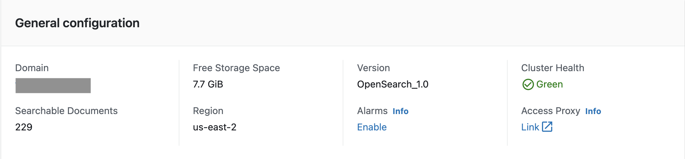

访问代理
默认情况下，无法从 Internet 访问 VPC 内的 Amazon OpenSearch Service 域。日志通创建了一个高可用的 Nginx cluster，它允许您从 Internet 访问 OpenSearch Dashboards。或者，您可以选择使用 SSH 隧道访问 Amazon OpenSearch Service 域。
本节介绍代理堆栈的架构以及以下内容：
架构
日志通创建一个 Auto Scaling Group (ASG) 和一个 Application Load Balancer (ALB)。

工作流程如下：
-
用户访问代理的自定义域，该域需要通过DNS服务解析（例如，使用AWS上的Route 53）。
-
DNS 服务将流量路由到面向 Internet 的 ALB。
-
ALB 将流量分配到 ASG 内 Amazon EC2 上运行的后端 Nginx 服务器。
-
Nginx 服务器将请求重定向到 OpenSearch Dashboards。
-
（可选步骤）如果代理的 VPC 与 OpenSearch 服务不同，则需要 VPC 对等互连。
创建代理
您可以使用日志通控制台或通过部署独立的 CloudFormation 堆栈来创建基于 Nginx 的代理。
前提条件
- 确保 VPC 中的 Amazon OpenSearch Service 域 可用。
- 在 Amazon Certificate Manager (ACM) 中创建或上传域关联的SSL 证书。
- 确保您拥有 EC2 私钥 (.pem) 文件。
使用日志通控制台
- 登录日志通控制台。
- 在导航窗格中的 集群，选择 OpenSearch 域。
- 从表中选择域。
-
在 基本配置 部分，在 访问代理 标签处选择 开启。
注意
启用访问代理后，访问代理的链接将可用。
-
在创建访问代理页面的公共访问代理部分，为公共子网选择至少 2 个子网。您可以选择 2 个名为
LogHubVPC/DefaultVPC/publicSubnet的公有子网，它们是由日志通 默认创建的。 - 在公共安全组中选择 ALB 的安全组。您可以选择一个名为
ProxySecurityGroup的安全组，该安全组由日志通 默认创建。 - 输入域名。
- 选择与域名关联的Load Balancer SSL Certificate。
- 选择Nginx 实例密钥名称。
- 选择创建。
使用 CloudFormation 堆栈
此自动化 AWS CloudFormation 模板在 AWS 云中部署 日志通- Nginx 访问代理 解决方案。
-
登录 AWS 管理控制台并选择按钮以启动 AWS CloudFormation 模板。

您也可以下载模板 开始部署。
-
要在不同的 AWS 区域中启动堆栈，请使用控制台导航栏中的区域选择器。
-
在 创建堆栈 页面上，验证正确的模板 URL 显示在 Amazon S3 URL 文本框中，然后选择 下一步。
-
在 指定堆栈详细信息 页面上，为您的堆栈分配一个名称。
-
在 参数 部分，查看模板的参数并根据需要进行修改。此解决方案使用以下默认值。
参数 默认 说明 VPCId <需要输入>用于部署 Nginx 代理资源的 VPC，例如 vpc-bef13dc7。PublicSubnetIds <需要输入>部署 ELB 的公共子网。您需要至少选择两个公有子网，例如， subnet-12345abc，subnet-54321cba。PrivateSubnetIds <需要输入>部署 Nginx 实例的私有子网。您需要至少选择两个私有子网，例如， subnet-12345abc，subnet-54321cba。KeyName <需要输入>Nginx 实例的 PEM 密钥名称。 NginxSecurityGroupId <需要输入>与 Nginx 实例关联的安全组。安全组必须允许来自 ELB 安全组的访问。 ProxyInstanceType t3.large OpenSearch代理实例的类型。例如t3.micro ProxyInstanceNumber 2 OpenSearch代理实例的数量。例如1到4 Endpoint <需要输入>OpenSearch 端点，例如， vpc-your_opensearch_domain_name-xcvgw6uu2o6zafsiefxubwuohe.us-east-1.es.amazonaws.com。EngineType OpenSearch OpenSearch 的引擎类型。选择 OpenSearch 或 Elasticsearch。 CognitoEndpoint <可选>OpenSearch 域的 Cognito 用户池端点 URL，例如， mydomain.auth.us-east-1.amazoncognito.com。如果您的 OpenSearch 域不是通过 Cognito 用户池认证，请留空。ELBSecurityGroupId <需要输入>与 ELB 关联的安全组，例如， sg-123456。ELBDomain <需要输入>ELB的自定义域名，例如 dashboard.example.com。ELBDomainCertificateArn <需要输入>与 ELBDomain 关联的 SSL 证书 ARN。证书必须从 Amazon Certificate Manager (ACM) 创建。 ELBAccessLogBucketName <需要输入>代理ELB的访问日志存储桶的名称。 SsmParameterValueawsserviceamiamazonlinuxlatestamzn2amihvmx8664gp2C96584B6F00A464EAD1953AFF4B05118Parameter /aws/service/ami-amazon-linux-latest/amzn2-ami-hvm-x86_64-gp2 代理实例AMI的SSM参数。大多数情况下可以使用默认值。 -
选择下一步。
-
在 配置堆栈选项 页面上，选择 下一步。
-
在 审核 页面上，查看并确认设置。选中确认模板创建 AWS Identity and Access Management (IAM) 资源的复选框。
-
选择 创建堆栈 部署堆栈。
您可以在 AWS CloudFormation 控制台的 状态 列中查看堆栈的状态。您应该会在大约 15 分钟内收到 CREATE_COMPLETE 状态。
代理实例推荐机型选择
下表列出了基于并行访问的用户数推荐的代理实例配置。您可以结合实际的应用场景进行具体的实例数量和机型的调整。
| 并行访问的用户数 | 代理实例机型 | 代理实例数量 |
|---|---|---|
| 4 | t3.nano | 1 |
| 6 | t3.micro | 1 |
| 8 | t3.nano | 2 |
| 10 | t3.small | 1 |
| 12 | t3.micro | 2 |
| 20 | t3.small | 2 |
| 25 | t3.large | 1 |
| 50+ | t3.large | 2 |
创建关联的 DNS 记录
配置代理基础架构后，您需要在 DNS 解析器中创建关联的 DNS 记录。 下面介绍如何找到 ALB 域，然后创建指向该域的 CNAME 记录。
- 登录日志通控制台。
- 在导航窗格中的 集群 下，选择 OpenSearch 域。
- 从表中选择域。
- 选择访问代理选项卡。您可以看到 负载均衡域名，即 ALB 域。
- 转到 DNS 解析器，创建指向该域的 CNAME 记录。如果您的域由 Amazon Route 53 管理，请参阅使用 Amazon Route 53 控制台创建记录。
通过代理访问 Amazon OpenSearch Service
DNS 记录生效后，您可以通过代理从任何地方访问 Amazon OpenSearch Service 内置仪表板。 您可以在浏览器中输入代理的域，或单击常规配置部分中访问代理下的链接按钮。

删除代理
- 登录日志通 控制台。
- 在导航窗格中的 集群 下，选择 OpenSearch 域。
- 从表中选择域。
- 选择访问代理选项卡。
- 选择删除。
- 在确认提示中，选择 删除。